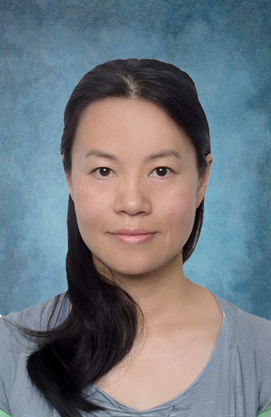

Catherine C. Liu 劉春玲
Associate Professor of Statistics and Biostatistics, Department of Data Science and Artificial Intelligence, The Hong Kong Polytechnic University.

Biography
Catherine C. Liu (劉春玲) is an Associate Professor of Statistics and Biostatistics. Since 1 July 2024, she has transferred to DSAI from AMA at The Hong Kong Polytechnic University (PolyU).
She develops statistical learning models, methods, and theories for high-dimensional data and versatile types of data with complex structures, with recent interest in medical image data.
Prior to joining PolyU, Catherine received an Intramural Research Trainee Award and completed postdoctoral training at NICHD/NIH, USA. She received her Ph.D. in Statistics from The University of Hong Kong, M.Phil. in Mathematical Statistics from Wuhan University, and B.S. in Mathematics from Huazhong Normal University.
Research Interests
- Imaging data, statistical learning, and Bayesian inference.
- Matrix/tensor factor models and high-dimensional data.
- Functional, longitudinal, and multivariate data.
- Biomedical empirical studies in ophthalmology and type-2 diabetes.
- Environmental statistics in hydrology and climate.
Opportunity
The group welcomes postdoctoral fellows, research assistants, and prospective Ph.D. students interested in statistical inference for modern learning scenarios.
Interested students are encouraged to email with a CV, transcript, and a short statement of research interests.
Work Experience
- 2024-Present
Associate Professor, DSAI, PolyU. - 2017-2024
Tenured Associate Professor, AMA, PolyU. - 2011-2017
Tenure-track Assistant Professor, AMA, PolyU. - 2010-2011
Tenure-track Lecturer, AMA, PolyU.
Education
- 2008-2010
IRTA Postdoctoral Fellow, NICHD/NIH, USA. - 2008
Ph.D. in Statistics, The University of Hong Kong. - 2004
M.Phil. in Mathematical Statistics, Wuhan University. - 2000
B.S. in Mathematics, Huazhong Normal University.
Editorship
- Associate Editor, Computational Statistics & Data Analysis.
- Associate Editor, Statistics and Its Interface.
- Guest editorial work on Bayesian inference, AI, and biostatistics.
Awards & Service
- ICSA Youth Best Paper Award Committee.
- ICSA President Nomination Committee.
- ENAR 2010 Workshop Travel Award.
- Eunice Kennedy Shriver Intramural Research Training Award.
Contact
- Email: macliu@polyu.edu.hk
- Phone: +852 2766 6931
- Office: AG408, Chung Sze Yuen Building, 11 Yuk Choi Road, Hung Hom